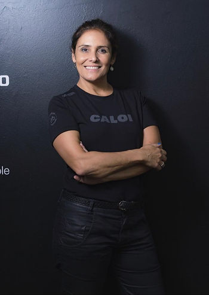
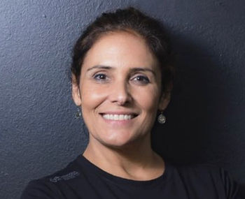

Texto de Alessandra Dutra

Está aí uma resposta que vale a pena levantar alguns pontos antes de ser respondida. Se percorrermos por um breve conjunto de dados históricos acerca dos esportes, vamos nos deparar com o momento em que cada modalidade se consolidou como esporte. Cada modalidade precisou nascer de uma forma, tem sua história, e teve seu momento legislado como modalidade esportiva.
Muito diferente do conceito de atividade física, e exercício físico, o esporte no que concerne a sua epistemologia diz que qualquer coisa que envolva COMPETIÇÃO é esporte.
Cabe aqui um ponto que eu acredito causar um problema conceitual e, está construída como representação social na mente dos indivíduos sobre a relação exercício físico e esporte, impactando no preconceito social contra os jogos eletrônicos.
Esse ponto é muito relevante, e diz respeito aos estudos do campo metabólico, há discussões teóricas e não deixa também de ser epistemológica, em defesa de que o esporte esteja apenas associado ao exercício físico – que segundo especialistas no assunto é, uma subcategoria da atividade física planejada, estruturada e repetitiva, que resulta na melhoria ou na manutenção de uma ou mais variáveis da aptidão física – sendo então, autores defendem que Esporte sem exercício físico não é esporte. Esse conceito realmente é relevante pois para tanto, é necessário se estabelecer um mínimo de atividade metabólica acima do metabolismo de repouso, gerando portanto, o conceito de Esforço Físico. Vamos encontrar o esforço físico em todas as modalidades esportivas ditas tradicionais. Importante salientar que esse conceito não está errado, mas também não quer dizer que esporte seja somente gerado pelo esforço físico.
Vamos entrar então, em outro conceito, o de desgaste físico, não tem necessariamente o movimento em si, a contração muscular mais ampla, se eu ficar numa sauna por 10 horas por exemplo, vou gerar desgaste físico, mas não haverá contração muscular intensa e sim um gasto energético intenso. Temos modalidades esportivas que causam mais desgaste físico, do que esforço físico. Modalidades como automobilismo, xadrez, skate e aqui entra o e-Sports.
Pensando aqui na obra de Barbanti, entre outros autores que debatem a epistemologia do esporte, é importante fecharmos o pensamento de que sim vamos encontrar competição em todos os esportes, mas não quer dizer que todo o esporte exija atividade física e ou exercício físico.
Estudiosos dos esportes modernos como Jean-Yves Tayac da Universidade de Sorbonne, apontam que o e-Sports é um dos grandes avanços esportivos/culturais da sociedade contemporânea, um esporte sem contato corporal que se utiliza de ferramentas tecnológicas para desenvolver potencialidades humanas e valores morais.
Vimos também Dreinskamper da Universidade de Müsnter na Alemanha, apoiar a questão da utilização dos movimentos da coordenação motora fina o quanto gera de pressupostos neuropsicológicos no desgaste físico/mental que envolve uma atividade motora tão sofisticada praticada nos e-Sports.
Então, o que mais encontramos no e-Sports para que possamos defende-lo como Esporte ?
- Tem competição;
- Tem regras próprias;
- Tem uma entidade que os representa;
- Tem Staff especializado ( Staff técnico/estratégico e Staff Interdisciplinar – Psicólogo, Nutricionista, Preparador Físico, Medico, Fisioterapeuta);
- Tem uma rotina dirigida para os treinamentos mecânicos e treinamentos mentais);
- Tem torcida;
- Tem comparação de um determinado desempenho entre grupos;
- Inspira pessoas;
- Praticado no mundo todo e tem a adesão de milhões de pessoas;
Nota-se: importante aqui dizer que a relação que ele tem com a atividade física estão em dois contextos:
a) No Treinamento Repetitivo da coordenação motora fina de específicos músculos-esqueléticos nos mapas de competição. Essas ações mecânicas também podem sofrer influências de fatores emocionais e mentais, portanto, há uma rotina de treinamento associada.
b) Na ROTINA de um proplayer a atividade física (desde caminhadas, corridas ao ar livre e praticas meditativas), ou exercício físicos planejados (geralmente os proplayers tem como hábito frequentar academias com aparelhos de musculação), bem como a prática de um esporte sempre é bem-vindo para ajudá-lo na preparação física e mental para enfrentamento e melhor aproveitamento da jornada de treinamento e competição. Auxiliando assim no fortalecimento de suas habilidades mecânicas e emocionais favorecendo sempre o desempenho e a saúde mental do atleta de e-sports.
c) Na COMPETIÇÃO em si onde utiliza toda a sua concentração, sua disposição neural, física, emocional para se dedicar muitas vezes por horas e horas duelando com outro time, em um mesmo dia.
Atento aqui que Coubertin, ao criar os Jogos Olímpicos na Era Moderna, estava preocupado em resgatar os jovens ingleses por meio do espírito olímpico, e desenvolver princípios mais éticos e morais. Quero apenas contextualizar aqui que, na época, eram os nobres que praticavam esportes e os Jogos Olímpicos se concretizou com eles até que cada modalidade esportiva pode traçar sua história apresentando seus heróis e talentos.
Hoje estamos em mais um marco histórico do esporte, o skate está aí, o surf, o xadrez, o automobilismo, agora chegou a vez dos e-Sports, está na hora de desmistificarmos essa modalidade.
Todo esporte nasceu de entretenimento, nasceu para se divertir num primeiro momento e sim, podemos jogar futebol para descontrairmos depois de um dia puxado no trabalho, assim como podemos também jogar videogame.
É fato, saber que a indústria de videogame movimenta milhões e milhões de dólares deve gerar muitas polêmicas. Uma das coisas que difere o esporte tradicional do e-Sports é a premiação aos atletas. É algo muito mas muito distante, até mesmo das modalidades mais consolidadas e famosas no mundo como o futebol. Vale lembrar que a indústria Attari levou os videogames para as casas dos consumidores, logo se tornou entretenimento, que logo se tornou competição. Isso também gera muito preconceito, porque muitas pessoas ainda tem a visão que videogame é apenas entretenimento. No esporte tradicional, também nos deparamos com a indústria, e como ?! O entretenimento que virou modalidade, que voltou a ser entretenimento só que agora com uma indústria por traz de cada jogador ou time.
O foco aqui não é confrontar Esporte X eSports, os dois moram no meu coração, e sim apontar as similaridades e contextos que ambos de alguma forma já experienciaram e o quanto Esporte Tradicional e eSports estão olhando para a mesma direção, caminhando em momentos históricos diferentes, mas o e-Sports está passando por um lugar de reconhecimento que o Esporte convencional já passou, e que continua passando em algumas áreas sim, por exemplo, nem todo o esporte é olímpico, em algum momento será, dependendo do contexto. Assim como o esporte tradicional pode aprender com as organizações dos jogos eletrônicos como ficar mais próximo ainda mais do seu publico.
Na minha experiência, tanto nos esportes tradicionais quanto nos e-sports, percebo que a competição é uma experiência única, há imprevisibilidade em ambos, onde as regras oportunizam todos os competidores vencerem, mantendo a incerteza dos resultados. Enquanto no primeiro cenário a competição se dá num campo, quadra, trilha, água, no segundo cenário se dá num ambiente virtual, diferentes mapas garantem cenários vividos em ambientes não virtuais.
E percebo também uma coisa interessante do e-Sports, como os resultados não dependem da condição física do atleta, o impacto psicológico de uma jogada pode mudar tudo, por isso ele é tão emocionante.
O fato de nos depararmos com tantas crianças e adolescentes envolvidos nos jogos eletrônicos não quer dizer que o videogame seja o vilão, quando encontramos matérias sobre o vício nos jogos eletrônicos, ao meu ver, o grande vilão está nas relações afetivas/familiares que esses jovens estão inseridos. Para mim é claro, que um jovem “viciado em videogame” não consegue se tornar um proplayer, porque estão inseridos em realidades distintas. Este jovem não daria conta de suportar a rotina de um atleta de e-Sports, precisa ser tratado, investigar os fatores que o levam ao vício.
Sobre a questão das políticas publicas, penso que a democracia sempre nos dá a chance de desenvolvermos políticas públicas cada vez mais integrativa, cada vez mais perto das necessidades do povo, não importa Esporte ou e-Sports, em nosso país, todos precisam de politicas públicas, esse é o papel da democracia.
Portanto, Viva o Esporte convencional, Viva o e-Sports e Viva a Democracia!

Alessandra Dutra
Psicóloga
Mestre em Psicologia Social
31 anos de dedicação a Psicologia do Esporte com ênfase em Desenvolvimento e Alto Rendimento
Psicóloga da equipe global AvanciniRacing
Prep. Mental de atletas olímpicos
Psic. da Organização de eSports MIBR
Psic. da equipe competitiva de porker on line PokerLAB
Ex- presidente da ABRAPESP
Ex -psicóloga do Time Brasil